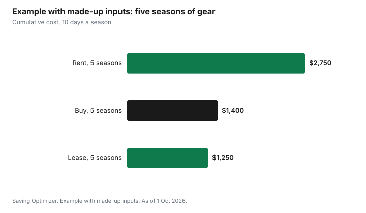

Sports · Canada
Ski Gear for Adults in Canada: Buy, Seasonal Lease or Rent?

For an adult skier in Canada, renting by the day makes sense for the first few days, a seasonal lease makes sense for a season when you know you will ski often but are not ready to commit, and buying makes sense once you are sure you will ski for several seasons. Work out the break-even: compare what you would spend renting for the days you ski with the cost of owning, spread over the seasons you will keep the gear. Buy boots first, because fit affects comfort and control more than any other piece. Rental packages at many hills include skis or a snowboard, boots, poles and a helmet, so count the helmet when you compare.
Key takeaways
- Rent for your first few days, while you learn what you like.
- A seasonal lease suits a season of regular skiing before you commit to buying.
- Buy when you are sure you will ski for several seasons; spread the cost over those seasons.
- Boots first: fit matters most, and a good boot improves rental skis too.
- Rental packages often include a helmet. Horseshoe Resort lists skis or snowboard, boots, poles and helmet.
- Example with made-up inputs: buying pays off by season three for an adult skiing 10 days a year.
Lease costs
Ski shops in many areas offer seasonal leases: you pay once in the fall and keep a set of skis, boots and poles until spring. Leases are common for children, who outgrow gear, and some shops offer adult leases too. Some shops credit part of the lease toward a purchase later. Ask what is included, whether tuning is covered, what happens if something breaks, and when the gear must be returned.
| Question | Why it matters |
|---|---|
| What is included (skis, boots, poles, helmet)? | Helmets are sometimes extra |
| Is a tune included? | Edges and wax affect control |
| Damage and theft? | You may be responsible for the value |
| Return date? | Late returns can cost extra |
| Credit toward purchase? | Lowers the cost of buying later |
| Can I swap boots if they hurt? | Boot fit can change after a few days |
Used gear
Used skis and boards can be good value, especially from ski swaps, end-of-season shop sales and people upgrading. Bindings are the part to be careful with. A ski shop can tell you whether the bindings on used skis can still be adjusted and serviced, and can adjust them to your boot, weight and ability. Boots are harder to buy used, because liners pack down to the previous owner's feet and shells wear at the toe and heel.
- Look for ski swaps in the fall, often run by ski clubs and schools.
- Ask a shop whether the bindings can be adjusted and serviced before you buy used skis.
- Check bases and edges for deep gouges and rust.
- Avoid used boots with cracked shells or worn soles.
- Budget a tune and binding adjustment for any used skis.
Boot fitting
Boots decide how comfortable you are and how well you control the skis. A boot that fits well can make an average ski feel good; a poor boot makes every ski feel bad. If you buy one thing, buy boots, fitted by someone who measures your feet and asks how you ski, and rent or lease skis around them. Bring the socks you ski in. Expect a fitter to suggest a snug fit that loosens slightly as the liner packs down.
Break-even
Compare the yearly cost of each option over the number of seasons you expect to ski.
| Line | Rent by the day | Seasonal lease | Buy |
|---|---|---|---|
| Up-front cost | None | Lease price each season | Skis, bindings, boots, poles, helmet |
| Per day | Rental price × days | None | None |
| Yearly upkeep | None | Usually included | Tuning, waxing |
| Seasons kept | — | — | Your estimate |
| Cost per season | Rental × days | Lease price | (Purchase ÷ seasons) + upkeep |
The more days you ski each season, the faster buying wins. Someone who skis three days a year may never break even on buying; someone who skis fifteen days may break even in the first season.
What rental packages include
Rental packages vary by hill. Horseshoe Resort's rental page lists packages that include skis or a snowboard, boots, poles and a helmet, with a snowboard package that includes the board, boots and helmet. Midweek and weekend or holiday rates differ. When you compare renting with owning, remember that owning means buying a helmet too, and that rental helmets and boots may not fit as well as your own.
Tuning and storage
Owned skis need sharpening and waxing. Many hills and shops offer tuning services such as sharpening, iron-on wax and machine wax; Horseshoe Resort lists these among its tuning services. Store skis dry, with a coat of wax on the bases over the summer, and boots buckled so the shells keep their shape.
Clothing and the extras
Gear is more than skis and boots. A helmet, goggles, gloves or mittens, a warm base layer and waterproof outerwear all add up, and they are worth owning even if you rent skis, because rental packages cover equipment, not clothing. Buy outerwear in end-of-season sales or second-hand, and use what you already own for layers. The guides to winter coat cost per wear and kids' winter gear use the same cost-per-use method. Snowboarders face the same choice as skiers, with fewer pieces: a board, bindings and boots, and the same rule that boots come first.
Example with made-up inputs: five seasons
These numbers are an example with made-up inputs. They are not shop or hill prices. An adult skis 10 days a season. Renting at $55 a day costs $550 a season. A seasonal lease costs $250. Buying a new package of skis, bindings, boots, poles and a helmet costs $1,100, plus $60 a season for tuning. Over five seasons, renting costs $2,750, leasing $1,250, and buying $1,400. Buying passes renting during the second season and is close to leasing over five seasons; it wins if the gear lasts longer.
| Season | Rent ($550 a season) | Lease ($250 a season) | Buy ($1,100 + $60 a season) |
|---|---|---|---|
| 1 | $550 | $250 | $1,160 |
| 2 | $1,100 | $500 | $1,220 |
| 3 | $1,650 | $750 | $1,280 |
| 4 | $2,200 | $1,000 | $1,340 |
| 5 | $2,750 | $1,250 | $1,400 |

Plan
- Rent for your first few days and note what you like.
- If you will ski regularly this season but are unsure about next, lease.
- When you are sure, buy boots first from a fitter.
- Look for used skis at fall swaps and have a shop inspect the bindings.
- Budget tuning each season.
- Pair the gear decision with the right pass; see local ski hill season passes.
Sources
- Horseshoe Resort, Lift Ticket and Rentals Pricing, horseshoeresort.com, as of 1 Oct 2026. Rental packages include skis or snowboard, boots, poles and helmet; midweek and weekend or holiday rates.
- Horseshoe Resort, Tuning Services, horseshoeresort.com, as of 1 Oct 2026. Sharpening and waxing services.
- The lease, rental, purchase and tuning amounts in the example are an example with made-up inputs.
Frequently asked questions
Is it cheaper to buy or rent skis as an adult?
It depends on how many days you ski and how many seasons you keep the gear. Compare rental price × days per season with the purchase price divided by seasons kept, plus tuning. In a made-up example at 10 days a season, buying passed renting in the second season.
Should I lease skis as an adult?
A seasonal lease suits a season of regular skiing when you are not ready to buy. Ask what is included, whether tuning is covered, and whether the lease can be credited toward a purchase.
What should I buy first, skis or boots?
Boots. Fit affects comfort and control more than any other piece of gear, and good boots make rental skis feel better.
Is it safe to buy used skis?
Often, if a ski shop confirms the bindings can be adjusted and serviced and sets them for you. Check bases and edges, and budget for a tune.
What does a ski rental package include?
It varies by hill. Horseshoe Resort lists packages with skis or a snowboard, boots, poles and a helmet.
Researched and drafted with AI assistance and fact-checked against official Canadian sources. How we create content.
Disclosure: Saving Optimizer may earn a commission if a partner link is added later, such as a ski gear or cash-back offer type. No partnership is claimed on this page, and no shop, brand or resort is ranked. Education only.